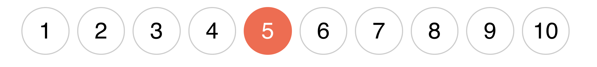
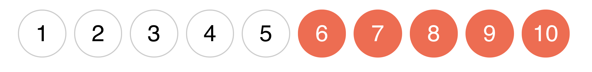
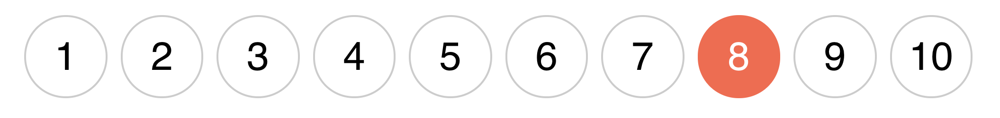

Структурні псевдокласи - це спосіб вибрати певні елементи з колекції дочірніх елементів (сусідів), без присвоєння додаткових класів. Дочірні елементи (сусіди) - це елементи зі спільним батьком.
<ul class="list">
<li class="list-item">
<a class="list-link">Посилання 1</a>
</li>
<li class="list-item">
<a class="list-link">Посилання 2</a>
</li>
<li class="list-item">
<a class="list-link">Посилання 3</a>
</li>
</ul>
У наведеному вище прикладі, елементи li.list-item - це сусіди, і до них можна буде застосувати структурні псевдокласи. Водночас посилання a.list-link не є сусідами, у них відсутній спільний батько, тому не можна буде використовувати псевдокласи для вибору певного посилання або групи посилань.
# ✅ Спрацює, .list-item - це колекція сусідів зі спільним батьком
.list-item: структурний-псевдоклас {}
# ❌ Не спрацює, .list-link - це не колекція сусідів, у них відсутній спільний батько
.list-link: структурний-псевдоклас {}
Псевдокласи :first-child і :last-child
Дозволяють вибрати перший або останній елемент в колекції сусідів. Наприклад, якщо кожному елементу списку задати нижній відступ, то він буде і в останнього. Крайню геометрію необхідно обов'язково чистити, тому що такі відступи можуть неочевидно випадати або розширювати батька.
<ul class="list">
<li class="list-item">HTML</li>
<li class="list-item">CSS</li>
<li class="list-item">JavaScript</li>
<li class="list-item">React</li>
</ul>
Псевдоклас :last-child вибирає останній елемент в колекції сусідів.

.list-item {
margin-bottom: 12px;
}
.list-item:last-child {
margin-bottom: 0;
}
Аналогічно працює :first-child, застосовуючи стилі до першого елемента в колекції сусідів. Наприклад, коли потрібно задати верхній відступ всім елементам, крім першого.

.list-item {
margin-top: 12px;
}
.list-item:first-child {
margin-top: 0;
}
Псевдоклас :not(selector)
Дозволяє вибрати всі елементи, які не задовольняють критерій - простий селектор записаний в дужках. Простий селектор - це універсальний селектор, селектор типу, ідентифікатора, атрибута, класу або псевдокласу.
Правило застосування нижнього відступу до всіх елементів, крім останнього, можна записати наступним чином.
/*
* Читається як: застосувати стилі до всіх елементів з класом list-item,
* які не є останнім елементом в колекції сусідів.
*/
.list-item:not(:last-child) {
margin-bottom: 12px;
}
Псевдоклас :nth-child(an+b)
Вибирає елементи в колекції сусідів за номером, зазначеним в дужках, за допомогою циклу an+b, який дозволяє задати правило для послідовності елементів.
- a - період циклу. Довільне число.
- n - лічильник циклу. Починається з нуля і збільшується на одиницю на кожній ітерації.
- b - зміщення. Довільне число.
Наприклад, якщо a = 2, а b = 1, то an+b = 2n+1. Ця формула вибере всі непарні елементи.
# При n = 0 2 * 0 + 1 = 1 # При n = 1 2 * 1 + 1 = 3 # При n = 2 2 * 2 + 1 = 5 # І так далі для n = 3, n = 4 ...
Створимо розмітку списку з десяти елементів і будемо змінювати колір їх фону.
<ul class="list">
<li class="list-item">1</li>
<li class="list-item">2</li>
<li class="list-item">3</li>
<li class="list-item">4</li>
<li class="list-item">5</li>
<li class="list-item">6</li>
<li class="list-item">7</li>
<li class="list-item">8</li>
<li class="list-item">9</li>
<li class="list-item">10</li>
</ul>
N-й елемент
У найпростішому випадку можна передати буквально номер елемента колекції. Тобто a = 0, а значення b - це довільне число, номер елемента колекції. Тоді за будь-якого n, формула буде 0 * n + b або просто b.

.list-item:nth-child(5) {
background-color: orange;
}
Парні і непарні елементи
Для вибору всіх парних елементів можна використовувати формулу 2n або її псевдонім - значення even - зарезервоване слово.

.list-item:nth-child(2n + 1) {
background-color: orange;
}
/* Аналогічно, використовуючи псевдонім */
.list-item:nth-child(odd) {
background-color: orange;
}
Від N-го елемента
Якщо задати a = 1, то результуюча формула n + b дозволяє вибрати всі елементи, починаючи з елемента під номером b. Наприклад, для того щоб вибрати всі елементи з шостого і далі (тобто крім перших п'яти), використовуємо формулу n + 6.

.list-item:nth-child(n + 6) {
background-color: orange;
}
До N-го елемента
Якщо задати a = -1, то результуюча формула -n + b дозволяє вибрати всі елементи, починаючи з першого і до елемента під номером b. Наприклад, для того щоб вибрати перші п'ять елементів, використовуємо формулу -n + 5.

.list-item:nth-child(-n + 5) {
background-color: orange;
}
Кожен N-й елемент
Наприклад, для того щоб вибрати кожен 3-й елемент, починаючи з першого, використовуємо цикл an+b, в якому a = 3, а зміщення - b = 1.

.list-item:nth-child(3n + 1) {
background-color: orange;
}
- 3n + 2 - кожен третій елемент, починаючи з 2-го, тобто елементи 2, 5, 8 тощо.
- 2n + 4 - кожен другий елемент, починаючи з 4-го, тобто елементи 4, 6, 8 тощо.
- 4n + 5 - кожен четвертий елемент, починаючи з 5-го, тобто елементи 5, 9, 13 тощо.
Псевдоклас :nth-last-child(an+b)
Аналог :nth-child() з відмінністю у тому, що відлік ведеться з кінця колекції (Останнього елемента).
N-й елемент
Виберемо 3-й елемент з кінця, тобто 8-й, тому що всього 10-ть елементів. Якби всього було 20-ть елементів, тоді був би обраний 18-й тощо.

.list-item:nth-last-child(3) {
background-color: orange;
}
До N-го елемента
Щоб вибрати кілька останніх елементів в колекції, використовується формула -n + b, де b - це кількість елементів, що вибираються. Наприклад, у разі b = 3, будуть обрані тільки останні три елементи.

.list-item:nth-last-child(-n + 3) {
background-color: orange;
}
Додаткові псевдокласи
Цей набір псевдокласів використовується у досить рідкісних або дуже специфічних випадках.
- :first-of-type - вибирає перший селектор цього типу.
- :last-of-type - вибирає останній селектор цього типу.
- :only-of-type - вибирає елемент, який є єдиною дитиною такого типу в колекції сусідів.
- :nth-of-type(an+b) - вибирає номер селектора, використовуючи формулу an+b.
- :nth-last-of-type(an+b) - аналог :nth-of-type() з відмінністю у тому, що відлік ведеться з кінця колекції (останнього елемента).
- :only-child - вибирає елемент, який є єдиною дитиною з таким селектором в колекції сусідів.
- :empty - вибирає порожні елементи, тобто без нащадків і тексту.